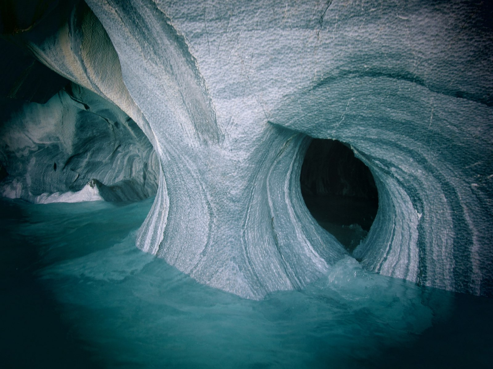

The water of Lake General Carrera is hard to pin down: turquoise, green, at times almost electric blue. Above it, marble curves into tunnels and vaults polished by the waves, streaked white, grey and pale blue in patterns that shift with the light. The Marble Caves of Chile, known locally as the Capillas de Mármol or Catedrales de Mármol, are one of the best-known images of Chilean Patagonia and a strong reason to travel through the Aysén Region.
This guide covers what you need to plan a visit: where the caves are, how to get there from Coyhaique, how to choose between a boat and a kayak, the best time to go and how the site is protected.
Where the Marble Caves are
The formations sit on the shore of Lake General Carrera. The main gateway is Puerto Río Tranquilo, in the municipality of Río Ibáñez, where most tours depart. Trips also leave from Bahía Mansa, about 10 minutes to the south.
A detail that helps put the scene in perspective: according to Sernatur, Chile's national tourism service, the marble here is around 300 million years old. What you glide past by boat is the slow work of water on that rock.

Getting there from Coyhaique
Puerto Río Tranquilo is about 220 km south of Coyhaique along the Carretera Austral. Sources give figures between 215 and 223 km and a driving time of 4 to 4.5 hours. Drive it in daylight and leave room for stops: the road crosses Cerro Castillo National Park before reaching the lake.
If you are coming from Santiago, the easiest option is to fly into Balmaceda Airport, which opened a new terminal in October 2026, and continue by road. Our guide on how to get to Coyhaique explains the options. To plan the rest of the trip south, see our Carretera Austral road trip guide.
Roadworks: in August 2026, paving began on 16.2 km between Bahía Murta and the El Belga Bridge, the stretch linking Bahía Murta with Puerto Río Tranquilo, with an investment of around CLP 70 billion. Allow extra time while the work continues.
Visiting the Marble Caves: boat or kayak
There are two ways to see them, and both are worth it. The choice comes down to your time, fitness and how close you want to get to the rock.
| By boat | By kayak | |
|---|---|---|
| Duration | About 2 hours | 2 to 3 hours |
| Departure | Puerto Río Tranquilo | Bahía Mansa (about 20 minutes' paddle to the formations) |
| Group | Open boats for 6 to 12 passengers | With an operator |
| Effort | Low | Moderate fitness |
| Highlight | Quick and comfortable for all ages | You can paddle into tunnels and caves |
| Reference price | From about USD 38 (≈ CLP 25,000) | Ask the operator |
The boat price is Sernatur's reference figure; check it with the operator before you go, as it may change. The official advice is to book with operators registered with Sernatur.
Bring warm and waterproof layers: you will be in an open boat on a Patagonian lake.
Best time to visit
The Marble Caves can be visited year-round. High season runs from November to March.
If you want to go inside the caves, aim for spring or autumn, when the lake level is lower. In summer, snowmelt raises the water and sometimes prevents entry, though the trip along the outside is still spectacular.

A protected nature sanctuary
The Marble Caves were declared a Nature Sanctuary in 1994. According to the copy of the decree cited by encyclopedias, this is Exempt Decree No. 281 of the Ministry of Education, covering a polygon of about 50 hectares.
The protection has gaps. A 2022 report by El Desconcierto noted that the polygon may not match the recognised chapels and that the decree places them in the municipality of Río Ibáñez, when they would actually lie in Chile Chico. Even the decree's date appears in two versions. Beyond the legal detail, the message is simple: this is a fragile place. Visit with registered operators, do not touch or remove rock, and follow your guide's instructions.
Frequently asked questions
Are the Marble Caves, Marble Chapels and Marble Cathedrals the same place?
Yes. They are different names for the same group of formations on Lake General Carrera. In Spanish they are called Capillas de Mármol or Catedrales de Mármol.
How much does the boat tour cost?
Sernatur lists prices from about USD 38 (≈ CLP 25,000) for the roughly 2-hour trip. Treat it as a reference and confirm with the operator.
Can I do a day trip from Coyhaique?
It is about 220 km and 4 to 4.5 hours each way, so a return trip in one day is very long. Staying overnight near the lake is far more comfortable.
When can you go inside the caves?
In spring and autumn, when the lake is lower. Summer snowmelt can make entry impossible.
Coming back to Aysén
Many travellers come to Aysén for the Marble Caves and leave planning their return. If you would like a retreat of your own in the region, Inmobiliaria El Roble offers riverside plots with their own property tax ID (rol propio) and direct financing, including Horizontes de Mañihuales, on the Mañihuales River, and Parcelas Don Guillermo, on the Emperador Guillermo River, right on the Carretera Austral. Browse our projects.